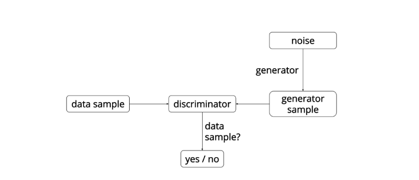
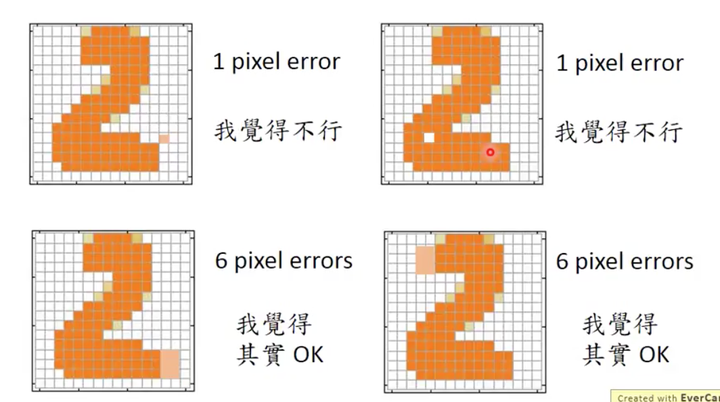

数字识别的延伸
手写识别wiki 点击查看
手写识别能干的事情其实不多，说到底它绕不开
在前两次的项目中，我们分别使用SVM和CNN实现了手写数字的识别
但是这仅仅提高了识别的精度，以及识别的范围，
我们如果增加数据集，添加标签，扩大识别的范围，其结果也不过是对识别的强化
也许有更有趣的事
不只是OCR，签名验证等
事实上，神经网络在手写数字上，能做点别的。
比如：手写数字验证码破解
对抗神经网络的使用
对抗神经网络（Generative Adversarial Network）

Generator是一个生成图片的网络，它接收一个随机的噪声z，通过这个噪声生成图片，记做G(z)。 Discriminator是一个判别网络，判别一张图片是不是“真实的”。它的输入是x，x代表一张图片， 输出D（x）代表x为真实图片的概率，如果为1，就代表100%是真实的图片，而输出为0，就代表不可能是真实的图片

也许可以通过GAN实现更加真实的“AI”